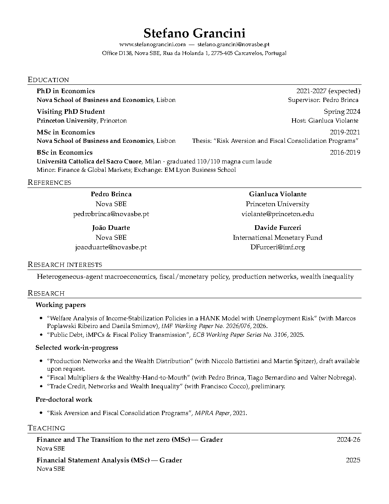

Ph.D. in Economics
NOVA School of Business and Economics · 2021–2027 (expected)
NOVA School of Business and Economics · 2021–2027 (expected)
Princeton University · Spring 2024
European Central Bank · 2024–2025
International Monetary Fund · Summer 2025
Heterogeneous-agent macroeconomics, fiscal and monetary policy, production networks, and wealth inequality

* Presented by a coauthor. + Scheduled.